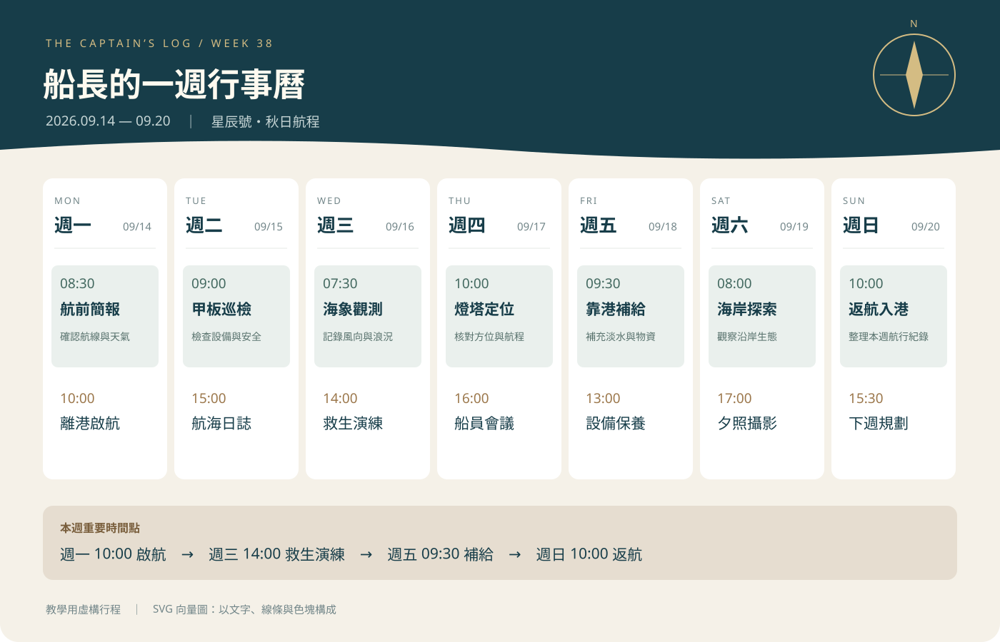

ACTIVITY 01
活動一｜HTML 文字層級
這一活動練習使用不同的 HTML 標籤建立文字結構。
小安的學習小站
你好，我是小安。我喜歡畫畫，也喜歡探索新工具。
我的學習興趣
我想用 數位設計，把學習變得更有趣。
這學期想試試看
我的第一個挑戰是：做一個介紹家鄉的網站。
我的知識小角落
水的化學式是 H2O。
邊長 3 公分的正方形，面積是 9 cm2。
學習重點：使用標題、段落、粗體、斜體、下標與上標，讓內容具有清楚的層級。
ACTIVITY 02
活動二｜圖片、聲音、影片與連結
本活動使用圖片、音訊與影片，練習在 HTML 中放入多媒體素材。
看一張圖片
這是攝影風格的 AI 生成花朵圖片，你注意到哪些部分？
換一張透明背景 PNG
下方區塊用淡色背景協助觀察透明圖片的效果。

船長的一週行事曆

教學用虛構行程：2026 年 9 月 14 日至 20 日。週一 10:00 啟航；週三 14:00 救生演練；週五 09:30 靠港補給；週日 10:00 返航。
聽一段提示音
聲音說明：三個由低到高的短音，提醒我們開始觀察。
看一段影片
影片內容說明：花朵隨風擺動的短片，請觀察花朵的移動。
素材來源
花朵與透明花朵 PNG 由 AI 生成；行事曆 SVG 與提示音為課堂練習素材；影片採用 MDN 的 flower.mp4 示範檔。
ACTIVITY 03
活動三｜清單與表格
本活動練習使用無序清單、有序清單與表格整理資訊。
我想學的技能
- 網頁設計
- 圖片編輯
- 聲音錄製
我準備怎麼做
- 選一個想介紹的主題
- 整理文字和圖片
- 製作網頁並請同學試看
我的實作安排
| 想學的技能 | 練習任務 | 預計成果 |
|---|---|---|
| 網頁設計 | 修改標題與自我介紹 | 一頁個人介紹 |
| 圖片編輯 | 挑選並整理作品圖片 | 三張作品配圖 |
ACTIVITY 04
活動四｜表單元件
這是介面練習，請用虛構暱稱試填。資料不會送出或保存，不能當成正式報名。
你想參加什麼？
這個按鈕刻意停用。HTML 可以提供輸入與選擇介面，但本練習沒有接上處理或儲存資料的功能。
學習心得
透過活動一到活動四，我練習了 HTML 的基本結構與常用元素。 活動一讓我了解文字標籤的層級；活動二讓我學會放入圖片、聲音和影片； 活動三讓我可以用清單與表格整理資訊；活動四則讓我認識表單輸入元件。 接下來我希望能把這些基礎技巧運用到自己的作品集網站中。